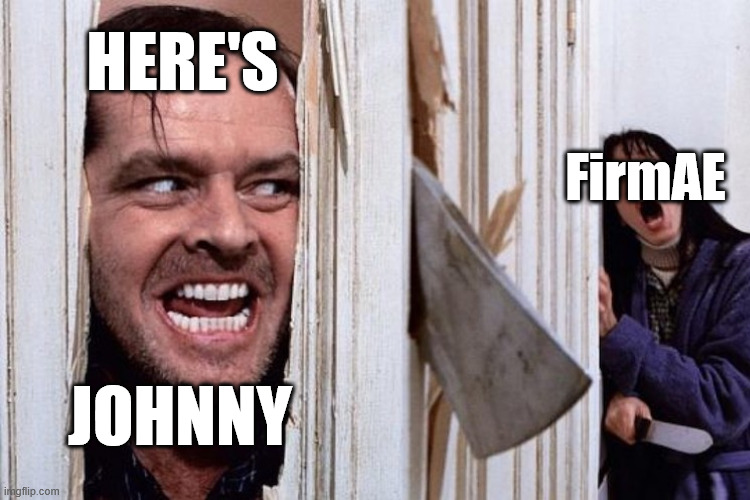
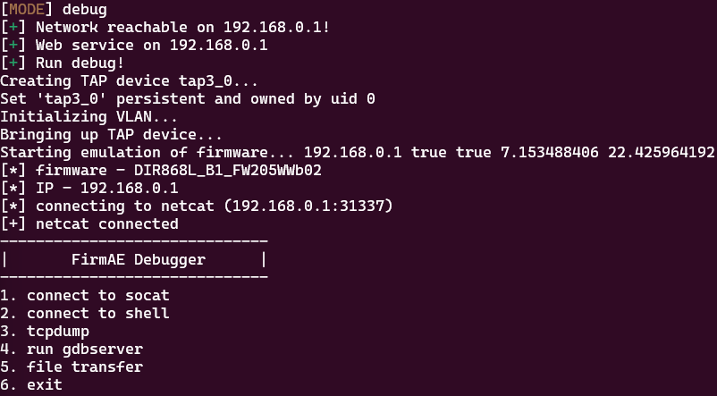
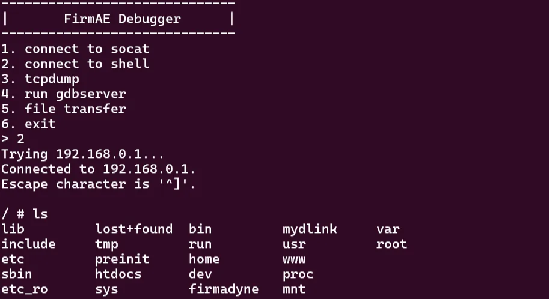
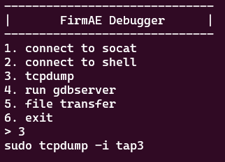
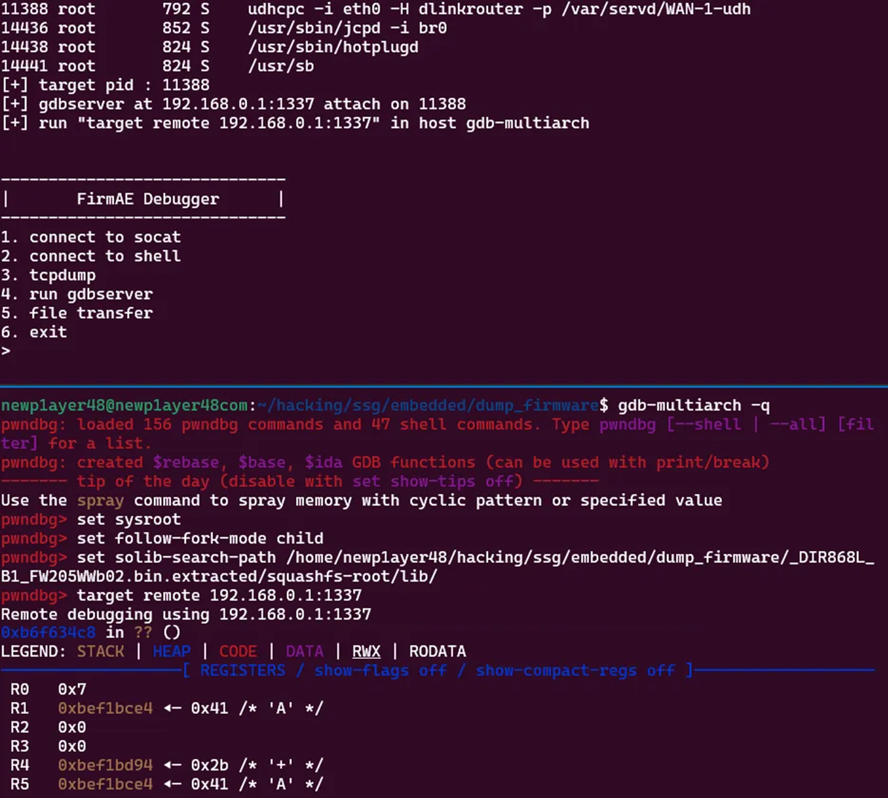
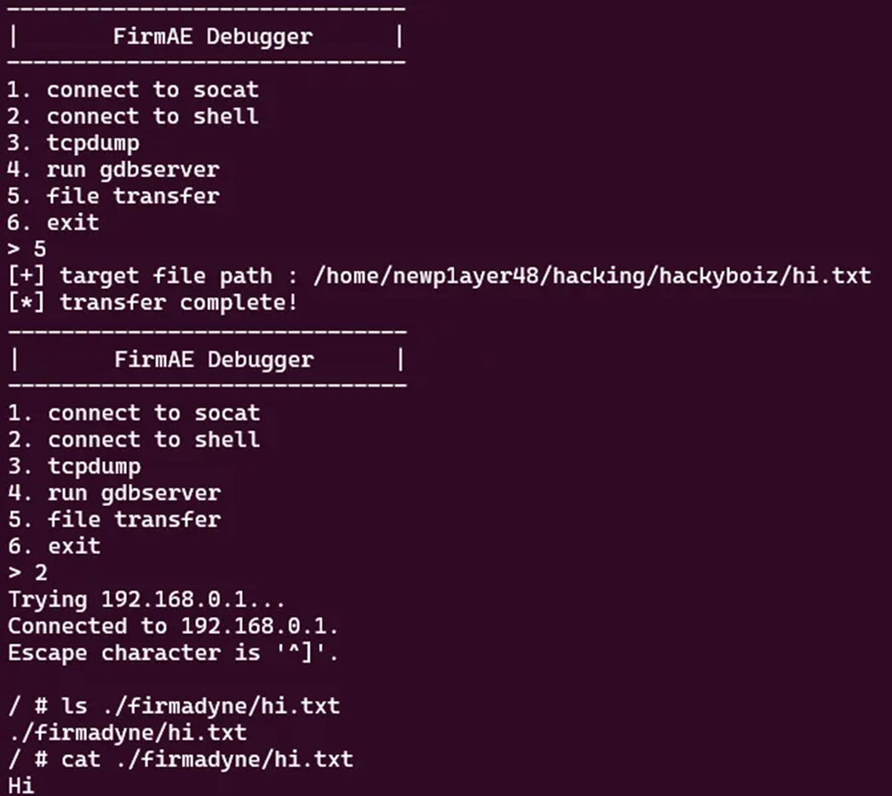
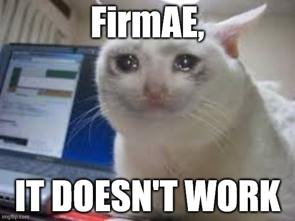
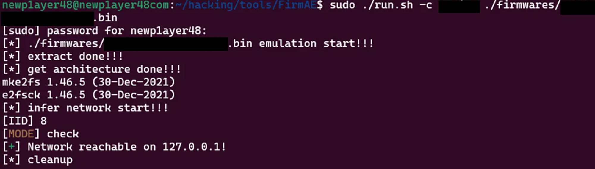

[Research] Firmware Emulation with FirmAE Part 2 (en)
Hello! I’m newp1ayer48, the one in charge of the low-level at Hackyboiz! 🤸🏻♂️
After a long time, I’ve safely(?) returned with Firmware Emulation with FirmAE Part 2!

FirmAE is a convenient tool that automates firmware emulation! Emulating and dynamically analyzing firmware is a great way to find vulnerabilities! For emulation basics and FirmAE installation, please refer to the previous article, Firmware Emulation with FirmAE Part 1.
Continuing from the last post, this article will cover FirmAE’s structure, execution, and how to resolve IP issues should they arise. 🙌🏻
1. FirmAE Structure
The main directories and files of FirmAE are structured as follows.
| Directories & Files | Explanation |
|---|---|
FirmAE/analyses/ |
This is the location where files and logs related to the analyses mode of run.sh are stored. |
FirmAE/firmwares/ |
This is where you place the firmware (.bin) for analysis. |
FirmAE/images/ |
This is where the OS images for emulation are located. |
FirmAE/scratch/ |
For each emulation run, a subdirectory is created with an IID (Image ID), which stores all intermediate outputs and results for that specific run, including the extracted file system, kernel, generated disk image, and logs. The subdirectory is created in the format FirmAE/scratch/{IID}. |
FirmAE/scripts/ |
This is where the various sub-scripts called by the main scripts are located. |
FirmAE/scripts/makeNetwork.py |
It is responsible for dynamically analyzing the firmware’s network behavior, and then generating the final QEMU execution script FirmAE/scratch/{IID}/run.sh passing the relevant network settings to it. |
FirmAE/sources/scraper/firmware/spiders/ |
This is the directory where files corresponding to the <brand> argument, required for executing run.sh, are located. If this name is not found or if the brand name is to be extracted automatically, the process is handled by the get_brand() function in scripts/util.py. |
FirmAE/run.sh |
This is the main execution script, and it supports five modes by default. |
The 5 modes of FirmAE/run.sh are as follows.
-c(check) |
This is the mode for checking network/web connectivity. It is common practice to run this check before starting the emulation. |
|---|---|
-r(run) |
This is the mode for running the emulation. |
-d(debug) |
You can emulate the firmware in debug mode. |
-b(boot debug mode) |
This is a mode that allows for debugging at the kernel-level, starting right from the boot process. |
-a(analyze) |
This is the vulnerability analysis mode. It runs predefined attacks targeting web services to find potential vulnerabilities. The analysis results can be found in analyses/ and scratch/{IID}/result. |
There are many other files, of course… 😮 but since there’s a limit to what we can cover, I’ve only introduced the ones I deemed important.
Among these, the most important files and folders you’ll frequently interact with can be summarized below.
scripts/makeNetwork.pyrun.shscratch/
While other files also play a role, you can think of FirmAE’s main workflow like this: run.sh is executed with reference to the settings in scripts/makeNetwork.py, and the corresponding emulation images and files are generated in the scratch/ directory.
All logs generated during the emulation process exist within scratch/, so you can also check the log information to diagnose any problems that occur after execution! 🔍
2. FirmAE Execution and the FirmAE Debugger
Once you’ve completed the network and emulation check with the -c Check option, it’s time to run the emulation.
You can use various options for emulation depending on your needs and purpose. If you’re unsure, it’s best to use the -d option to perform debugging in debug mode.

If the emulation works correctly, you’ll see the FirmAE Debugger screen as above! 🎉 Now let’s look at the features of the FirmAE Debugger while the emulation is running. There are five main functions.
connect to socat: This provides access through a python
socat. Even if you don’t use this first function, if thenetcatconnection is successful, you can access the virtual device’s web page using the generated address and port! 🌐connect to shell: This function allows you to connect to and control the emulated virtual device via a shell!
You can use Linux commands defined in the firmware, such asbusybox. This enables dynamic analysis and testing within the device. 🧪

- tcpdump: You can analyze the created virtual network interface with
tcpdump. ✉️ The command shown cannot be modified, so analysis is only possible on the generated interface.

run gdbserver: This opens a gdb server inside the virtual device to provide dynamic analysis.
Some preparation is needed to use this feature. Since embedded device firmware mostly uses RISC architectures like ARM or MIPS, standard gdb often fails to recognize the transmitted and received data. ⚠️ Therefore, you must connect to the gdb server throughgdb-multiarch.sudo apt-get install gdb-multiarch gdb-multiarch set sysroot set follow-fork-mode child set solib-search-path PATH target remote IP:PORTAfter installation, run
gdb-multiarchand apply a few settings as shown above. You can register the firmwarelibaddress, previously extracted using binwalk, as thePATH. 📖
You can confirm the connection is successful by connecting to the gdb server targeting the example firmware process PID. If you apply this to a web service process likehttpd, you can debug the functions of that web page.
file transfer: You can transfer files from your local machine to the virtual device.
The path where the transferred file is saved is located within thefirmadyne/directory created inside the firmware. The reason for this is defined infile_transfer()withinFirmAE/debug.py. Since you can transfer files to the virtual device, you can push in programs like a reverse shell or transfer configuration files likexinetd.conforsshd_config. ✈️ If necessary, you can also transfer exploit code and related files for testing.
3. How to Solve IP and Network Problems
FirmAE sets up the network and runs the emulation based on the IP address configured in the device firmware. However, for various reasons—such as the IP not being set in the firmware or the device only allowing localhost access—the FirmAE emulation often fails to work. 😭

This problem has several causes and solutions. Here, I’ll introduce how to solve it by modifying scripts/makeNetwork.py.
When the default network configuration (bridge mode) fails, FirmAE has a feature to automatically switch to an alternative network method (QEMU user mode) to continue the emulation. 🚸 When this automatic switch occurs, the access environment is configured as localhost. Since the firmware in the picture below is such a case, you can see that the access environment is configured as localhost.

This happens where the network bridge settings for QEMU emulation are adjusted via the QEMU_NET_OPTS variable in scratch/{IID}/run.sh.
As explained earlier in the FirmAE structure section, the scratch/{IID} folder and its files are created by scripts/makeNetwork.py, which also handles network settings. Therefore, by modifying this Python script, you can force the emulation to always open with localhost. 🔓
Modifying scripts/makeNetwork.py
cp scripts/makeNetwork.py scripts/makeNetwork.py.bakFirst, back up the original file.
isUserNetwork = any(isDhcpIp(ip) for ip in ips) with open(SCRATCHDIR + "/" + str(iid) + "/isDhcp", "w") as out:# isUserNetwork = any(isDhcpIp(ip) for ip in ips) isUserNetwork = True with open(SCRATCHDIR + "/" + str(iid) + "/isDhcp", "w") as out:Modify the IP setting part from the first code block to the second.
portfwd = "hostfwd=tcp::80-:80,hostfwd=tcp::443-:443," for (proto, ip, port) in ports:portfwd = "hostfwd=tcp::8888-:80," # portfwd = "hostfwd=tcp::80-:80,hostfwd=tcp::443-:443," for (proto, ip, port) in ports:Also, modify the port setting part from the first code block to the second.

After modifying the file and running it, you can see that the IP changes to localhost! 👍🏻
This method might not be a fundamental solution, as it only changes the network settings. If it still doesn’t work, it’s best to analyze the firmware directly to match the network settings precisely. As mentioned before, all logs from the emulation process are in scratch/{IID}/, so analyzing the logs is another good way to solve problems.
Emulating directly through QEMU is also recommended! As those who have used it know, FirmAE is really slow…
Although FirmAE is slow, it is definitely a useful tool if you use it well! I hope this article has been of some help to your firmware emulation efforts! 🙏🏻
I’ll be back with another embedded topic next time! Thank you! 👋🏻

본 글은 CC BY-SA 4.0 라이선스로 배포됩니다. 공유 또는 변경 시 반드시 출처를 남겨주시기 바랍니다.